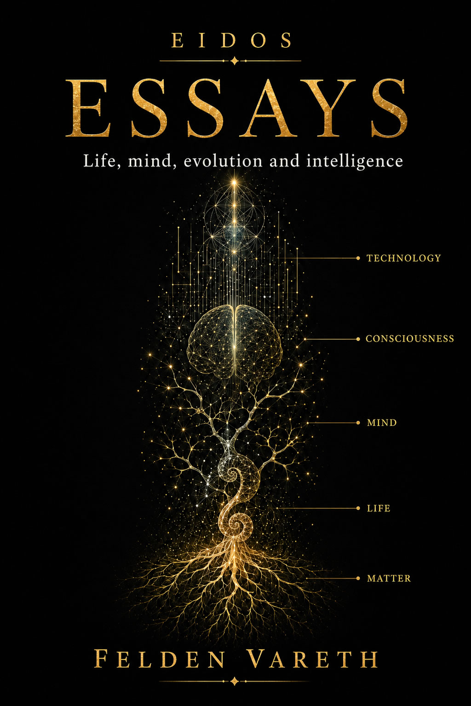

For some time now, I have been seeing videos and posts online about the so-called fine-tuning of the universe. Their argument is that certain physical constants have very precise values: if the forces that hold atomic nuclei together were different, matter might not organise itself as we know it; if the expansion of the universe changed, galaxies and stars might never form. Without those elements and structures, life on Earth could not have emerged. Many of these videos then add a conclusion: someone must have adjusted the constants so that we could exist.
There is no doubt that our existence depends on certain physical conditions. Physicists study how restrictive those conditions are. What catches my attention is the leap from that fact to the idea that the universe was set up to produce us. Could we be interpreting the probabilities from the only outcome we can observe?
That the universe allows us to exist is a fact. That our existence was its aim is an interpretation.
A deck of cards and an almost impossible outcome
Imagine shuffling a deck of fifty-two cards and laying them face up. The probability of getting that exact arrangement was one in 52 factorial, approximately one in 8 × 1067, assuming that every ordering was equally likely. Shuffle again: another arrangement will appear, just as improbable. And another if we repeat the experiment.
The particular arrangement was almost impossible to predict, but some arrangement had to come out. If we had written down the exact order before shuffling and then got it right, we would have a coincidence worth investigating. Looking at the cards afterwards and marvelling at how improbable that arrangement was is rather less surprising.
The difference lies in when we decided which outcome mattered to us. This seems obvious, until we start applying it to our own existence.
What were the chances of us being here?
I think of my parents. If they had met on a different day, if one of them had made a different decision, perhaps I would never have been born. The same goes for their parents, for those before them, and for a chain stretching back thousands of generations. There is no need to imagine great catastrophes: an encounter that never happens can change every generation that follows.
Now extend the question to the billions of people alive today. For exactly those of us who are here to exist, with our names, families and life stories, an immense succession of particular events had to take place. We have no formula for calculating its probability, but it is hard to imagine replaying history and ending up with the same population.
And yet here we are. It would only have taken a few different encounters and decisions among our ancestors for other people to be here in our place today. Once we exist, we inevitably find ourselves in a reality compatible with our existence. We can only observe from a history in which we were born. That does not change the chances beforehand: we are asking the question from inside the outcome. Had history been different, perhaps other people would be asking similar questions.
Some human population emerging and precisely us appearing are two different questions. Confusing them can turn any outcome into an apparent statistical miracle.
Is the universe too precisely calibrated?
The laws of physics present a difficulty that the deck of cards does not resolve. Some changes to the constants would affect the formation of stars or the stability of elements. The carbon in our bodies is produced in stars through nuclear reactions that depend on very specific properties. And if the effect of the so-called cosmological constant were much larger and positive, matter would have struggled to clump together and form galaxies like ours.
This is what physicists study when they talk about fine-tuning. We can change values in the equations and check which structures stop forming. Some models also explore what happens when several constants vary at once: combinations can emerge that allow more structures than seemed possible when changing just one. We still do not know why the constants have the values we observe, how far they could have differed, or whether some are linked by deeper laws.
There is also a difference between finding a narrow range of values and claiming that obtaining it was very improbable. Some researchers try to calculate those probabilities using models that assign different weights to possible values. The problem is that we still do not know which values could actually have occurred or what distribution would be appropriate. Without justified assumptions, a figure for the improbability of the universe tells us less than it seems. We do not have that cosmic lottery.
And an even harder question remains: when we say the universe is fine-tuned for life, do we mean life as we know it or any possible form of life? So far, we have only studied one: life on Earth. Perhaps many variations in the laws would prevent any complex organisation. Perhaps others would allow structures and processes different from our own. We do not know.
What if there were other observers?
Imagine, just as an exercise, a universe with different physical properties in which some kind of observer could emerge. Those beings would study their reality and find that the conditions they depend on are very particular. They might reach a conclusion much like ours: how extraordinary that the laws allow us to exist; it looks as though someone had prepared them for us.
But they would be a product of those conditions, just as we are a product of these. They would be looking at the outcome from within. Their surprise would not prove that their universe had been built with them in mind.
The writer Douglas Adams explained this through a puddle convinced that its hole had been made to fit it: every curve matched its shape perfectly. We know that it was the water that adapted to the hollow. The comparison has its limits—a possible form of life requires far more physics than a puddle—but it helps us recognise a temptation: to attribute intention to something that has simply allowed us to emerge.
So, fine-tuned for whom?
Being able to observe only a universe compatible with our existence does not explain why those conditions came about. If there were just one universe, the question would remain open.
There may be a creator, there may be a multiverse, or perhaps one day we will discover that the constants could not have had any other values. These are different possibilities, and today we have no definitive answer. We do not need to settle them to distinguish between a condition that makes our existence possible and a purpose aimed at producing us.
Darwin showed something similar in biology, though through a mechanism we understand much better: living things can become extraordinarily well adapted to their environment without evolution having pursued an outcome in advance. The parallel does not explain the constants of the universe, but it helps us spot our habit of looking back and confusing the outcome with intention.
When I think about that encounter between my parents, I do not conclude that all of preceding history was heading towards my birth. I feel the same way about the universe. Once we are here, it is easy to think that everything was calibrated for our existence. But we emerged and evolved under its laws. Perhaps the ease with which we imagine someone choosing them with us in mind says more about our psychology, our anthropocentrism, than about what we know of their origin. Perhaps one day we will understand why the universe has these laws rather than others. That we live by them seems clear enough.
References for further reading
Luke Barnes — The Fine-Tuning of the Universe for Intelligent Life (2012)
Steven Weinberg — Anthropic Bound on the Cosmological Constant (1987)
Fred C. Adams — The Degree of Fine-Tuning in our Universe—and Others (2019)
Victor J. Stenger — The Fallacy of Fine-Tuning (2011)
Beyond this article
Novel
EIDOS
A science fiction story about consciousness, identity and the possibility that the human might continue beyond the body.

Essays
EIDOS — Essays
A collection of essays on life, mind, evolution, consciousness, identity and artificial intelligence, following the kinds of questions explored in this blog.
Comments